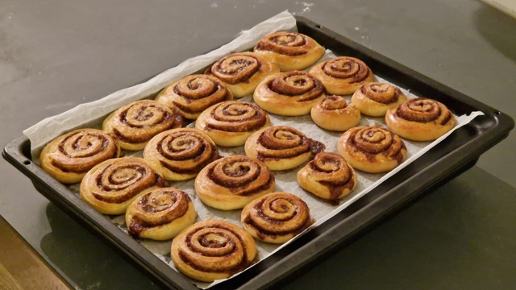

Kanelboller
Enkle kanelboller
Ingredienser:
Deig:
- 550g hvetemel
- 75g sukker
- 1pk gjær for søt deig
- 8g salt
- 250ml helmelk, lunken
- 75g meierismør, smeltet
- 2 store egg
Fyll:
- 130g meierismør, mykt
- 150g brunt sukker
- 2 ss malt kanel
Pynt:
Instruksjoner:
- Bland sammen ingrediensene til deigen i en bolle.
- Elt deigen på en melet overflate i ca. 8-10 minutter, eller til den blir glatt og elastisk.
- Legg deigen i en smurt bolle og la den heve i ca. 1-1.5 timer, eller til den dobles i størrelse.
- I en liten bolle, bland sammen mykt smør, brunt sukker og malt kanel til det er en jevn masse.
- Forvarm ovnen til 180°C.
- Kjevle ut den hevede deigen til en rektangel (ca. 40x30cm, eller større).
- Fordel kanel- og sukkerfyllet jevnt over deigen.
- Begynn å rulle deigen fra den lengste kanten til en stram rull.
- Skjær den rullede deigen i like store skiver og plasser dem på et bakebrett.
- Dekk brettet med et fuktig håndkle og la bollene heve i ytterligere 30-45 minutter.
- Pensle det piskede egget og strø et tynt lag perlesukker over kanelbollene.
- Stek kanelbollene i den forvarmede ovnen i 20-25 minutter, eller til de er gyldenbrune.
- La kanelbollene avkjøles i formen i noen minutter før du overfører dem til en rist for å kjøle helt ned.